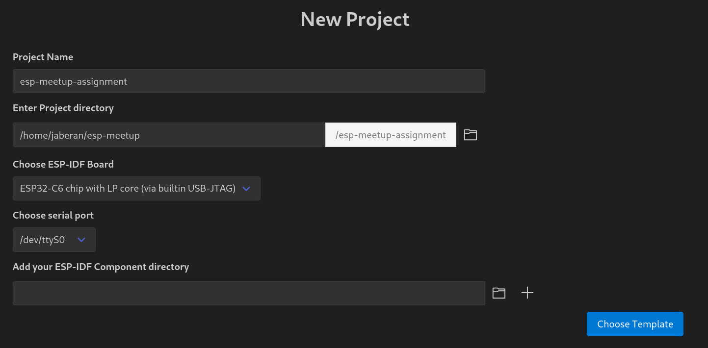
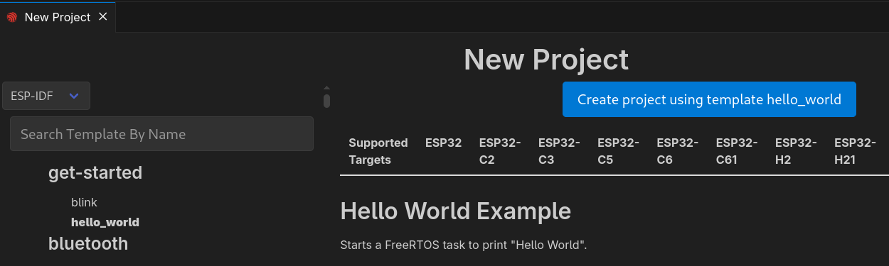
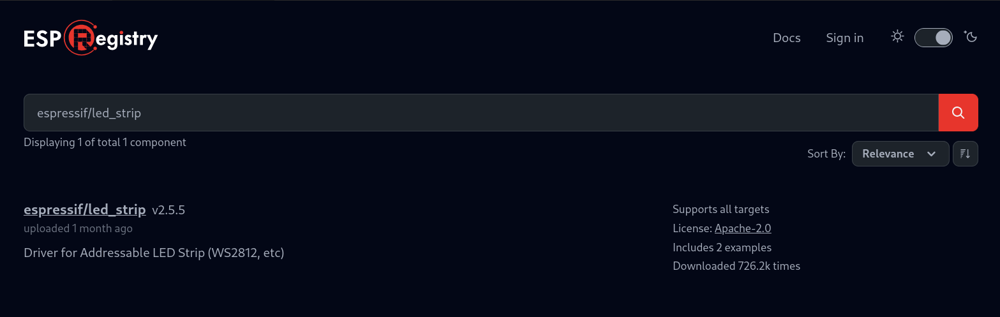
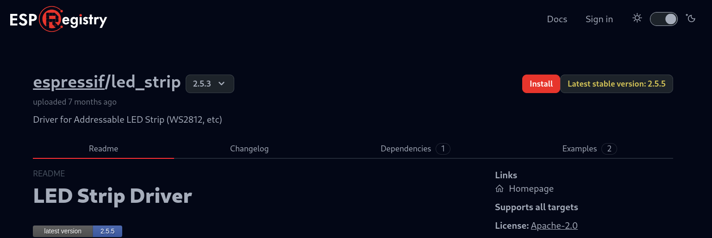

Úkol 2: Vytváření projektu a Komponenty
V tomto úkolu si ukážeme, jak pracovat s koponenty (Components) a jak je používat ke zrychlení vývoje vašich projektů.
Komponenty jsou podobné knihovnám (třeba těm z Arduino IDE); také obsahují různou přídavnou funkcionalitu, kterou byste v základním ESP-IDF nenašli. Pro příklad uveďme třeba různé drivery pro senzory, protokolové komponenty, nebo třeba BSP, board support package, o kterém ještě bude řeč. Některé komponenty jsou již přímou součástí některých ESP-IDF příkladů, je ale možné používat i externí komponenty díky modulární struktuře ESP-IDF.
Díky využívání komponent se nejen zjednododušuje udržovatelnost projektu, také se výrazně zrychluje jeho vývoj. Díky komponentám také lze znovupoužít stejnou funkcionalitu napříč různými projekty.
Pokud chcete vytvořit a publikovat vlastní komponentu (třeba pro váš specifický senzor), doporučujeme, abyste zhlédli talk DevCon23 - Developing, Publishing, and Maintaining Components for ESP-IDF (v angličtině).
Komponenty můžete prohledávat například přes platformu ESP Registry.
Využívání komponentů si ukážeme na novém projektu, kde si od základů napíšeme jednoduchou aplikaci, která rozbliká vestavěnou RGB LED s využitím komponenty pro LED pásky. Později si ukážeme, jak k tomu samému můžeme použít i komponentu BSP (board support package), která už byla zmíněná výše.
Pracujeme s komponenty
Budeme používat následující dvě komponenty:
- Komponentu pro RGB LED (WS2812) pásky, i když v našem případě bude LED “páskem” pouze jediná vestavěná LED připojená ke
GPIO8. - Komponentu Remote Control Transceiver (RMT), kterou budeme kontrolovat tok dat do LED.
- Vytvoření nového projektu
Nový projekt lze vytvořit přes GUI i přes příkazovou řádku. Pro ty, kdo s terminálem (CLI) příliš nepracují, to může být poněkud děsivé, v budoucnu vám to ale pomůže například v situacích, kdy budete ESP-IDF používat s jiným IDE než VSCode (nebo úplně samostatně). Níže ale budou uvedené oba příklady.
GUI
Otevřeme ESP-IDF Explorer (ikonka Espressifu v taskbaru nebo přes View -> Open View -> ESP-IDF: Explorer) a vybereme příkaz New Project Wizard (může být schovaný v Advanced menu). Dále postupujeme podle obrázků:


Po vytvoření projektu se vpravo dole objeví nenápadné okénko, které se vás zeptá, zda chcete otevřít nově vytvořený projekt v novém okně. Kliněte na “Yes”.
CLI
V ESP-IDF Exploreru v záložce commands vybereme ESP-IDF Terminal, který se otevře v dolní části obrazovky. Pro vytvoření nového projektu:
- Vytvoříme a přejdeme do složky, ve které chceme mít náš projekt
- Projekt vytvoříme
- Přejdeme do něj
mkdir ~/my-workshop-folder
cd ~/my-workshop-folder
idf.py create-project my-workshop-project
cd my-workshop-project
Pokud vám příkazy
idf.py ...nefungují, ujistěte se, že používáte ESP-IDF Terminal a ne jen běžnou konzoli.
Nyní musíme nastavit tzv. target. Toto slovo může mít v kontextu ESP-IDF více významů, v našem případě to ale vždy bude znamenat typ SoC, který používáme. V našem případě je to ESP32-C6 chip (via Builtin USB JTAG).
V CLI je mírný problém, jelikož může vzniknout nesoulad mezi VSCode a ESP-IDF, proto je lepší místo příkazu nastavovat proměnnou prostředí (environment variable).
export IDF_TARGET=esp32c6
# idf.py set-target esp32c6
Nyní jsme připraveni přidat komponentu espressif/led_strip. Jak již bylo řečeno, komponenta se postará o všechny potřebné ovladače pro náš LED “pásek” o jedné vestavěné diodě.
- Přidání komponenty
GUI
- Otevřete View -> Command Pallete (Ctrl + Shift + P nebo ⇧ + ⌘ + P) a do nově otevřené řádky napište ESP-IDF: Show ESP Component Registry. Nyní vyhledejte espressif/led_strip (vyhledávání může zabrat pár vteřin, kdy se zdánlivě nic neděje), klikněte na komponentu, vyberte správnou verzi (2.5.3) a klikněte na Install.
POZOR: Používáme starší verzi komponenty, nezapomeňte si ji vybrat z


CLI
idf.py add-dependency "espressif/led_strip^2.5.3"
Můžete si všimnout, že v hlavním adresáři projektu (main) se vytvořil nový soubor s názvem idf_component.yml. Při prvním buildu se navíc vytvoří složka managed_components a komponenta se do ní stáhne, pokud byla přidaná přes CLI. Pokud jste komponentu přidali přes GUI, vše se vytvoří i bez buildu.
# Obsah idf_component.yml
dependencies:
espressif/led_strip: "^2.5.3"
idf:
version: ">=4.4"
Závislé komponenty můžete do tohoto souboru přidávat také ručně, bez použití jakýchkoli příkazů.
Nyní se již vrhneme na samotné programování.
- Vytvoření funkce, která nakonfiguruje LED a ovladač RMT
Otevřeme si soubor hello_world_main.c. Nejdříve musíme importovat knihovnu led_strip.h…
#include "led_strip.h"
…deklarovat potřebné konstanty…
// 10MHz resolution, 1 tick = 0.1us (led strip needs a high resolution)
#define LED_STRIP_RMT_RES_HZ (10 * 1000 * 1000)
…a vytvořit kostru funkce pro konfiguraci:
led_strip_handle_t led_strip;
void configure_led(void)
{
// Your code goes here
}
Následující 3 kroky budete vpisovat do této funkce na místo komentáře Your code goes here.
- Konfigurace LED “pásku”
Použijeme strukturu led_strip_config_t. Pro ESP32-C6-DevKit-C, LED je typu WS2812.
led_strip_config_t strip_config = {
// Set the GPIO8 that the LED is connected
.strip_gpio_num = 8,
// Set the number of connected LEDs, 1
.max_leds = 1,
// Set the pixel format of your LED strip
.led_pixel_format = LED_PIXEL_FORMAT_GRB,
// LED model
.led_model = LED_MODEL_WS2812,
// In some cases, the logic is inverted
.flags.invert_out = false,
};
- Konfigurace RMT
Použijeme strukturu led_strip_rmt_config_t:
led_strip_rmt_config_t rmt_config = {
// Set the clock source
.clk_src = RMT_CLK_SRC_DEFAULT,
// Set the RMT counter clock
.resolution_hz = LED_STRIP_RMT_RES_HZ,
// Set the DMA feature (not supported on the ESP32-C6)
.flags.with_dma = false,
};
- Vytvoření RMT device
led_strip_new_rmt_device(&strip_config, &rmt_config, &led_strip);
- Vytvoření objektu pro LED “pásek”
Když máme funkci configure_led() hotovu, můžeme ji zavolat v hlavní funkci app_main.
configure_led();
- Nastavení barev
K nastavení barvy použijeme funkci led_strip_set_pixel s následujícími parametry:
led_strip: námi nakonfigurovaný objekt LED “pásku”0: index diody v pásku (jelikož máme pouze jednu, index bude vždy 0)20: červená (RED) složka s hodnotami mezi 0 a 2550: zelená (GREEN) složka s hodnotami mezi 0 a 2550: modrá (BLUE) složka s hodnotami mezi 0 a 255
led_strip_set_pixel(led_strip, 0, 20, 0, 0);
Vyzkoušejte si různé hodnoty pro R,G,B kanály!
- Update hodnot LED “pásku”
Samotné nastavení hodnoty pixelu nestačí; aby se hodnoty nastavené v předchozích kroku projevily, je třeba celý “pásek” nejdříve obnovit:
led_strip_refresh(led_strip);
Pokud chceme celý LED pásek vypnout, můžeme k tomu použít funkci led_strip_clear(led_strip);.
- Přeložení a odeslání kódu do desky
Když je náš kód kompletní, musíme ho nějakým způsobem dostat do naší desky. Celý proces se dá rozdělit do 4 kroků:
- Určení targetu: konkrétní desky, kterou používáme. V záložce ESP-IDF explorer v části Commands vybereme možnost Set Espressif Device Target (IDF_TARGET), zvolíme možnost esp32c6 a v následné nabídce vybereme možnost ESP32-C6 chip (via builtin USB-JTAG).
- Build: sestavení aplikace a vytvoření binárního souboru, který budeme nahrávat. Na stejném místě jako posledně klikneme na příkaz Build Project.
- Výběr správného seriového portu, ke kterému je naše deska připojená. I seriový port nastavíme pomocí příkazu v ESP-IDF Exploreru, tentokrát pomocí Select Port to Use.
- Flash: nahrání binárního souboru na desku. K tomu nám poslouží stejnojmenný příkaz, který lze nalézt hned vedle ostatních. Pokud se nás VScode zeptá na “flash method”, vybereme “UART”.
Pokud někdo omylem vybere špatnou flashovací metodu (např JTAG), stačí v souboru .vscode/settings.json manuálně upravit "idf.flashType": na "UART".
Všechny příkazy lze vyvolat také pomocí Command Pallete, kterou otevřete kombinací kláves Ctrl + Shift + P nebo ⇧ + ⌘ + P. Příkazy se ovšem jmenují občas trochu jinak (například místo Select Serial Port se příkaz jmenuje ESP-IDF: Select Port to Use ). Oba přístupy ale můžete libovolně kombinovat.
Kompletní kód
Níže naleznete kompletní a okomentovaný kód pro tento úkol:
#include <stdio.h>
#include "led_strip.h"
// 10MHz resolution, 1 tick = 0.1us (led strip needs a high resolution)
#define LED_STRIP_RMT_RES_HZ (10 * 1000 * 1000)
led_strip_handle_t led_strip;
void configure_led(void)
{
// LED strip general initialization, according to your led board design
led_strip_config_t strip_config = {
// Set the GPIO that the LED is connected
.strip_gpio_num = 8,
// Set the number of connected LEDs in the strip
.max_leds = 1,
// Set the pixel format of your LED strip
.led_pixel_format = LED_PIXEL_FORMAT_GRB,
// LED strip model
.led_model = LED_MODEL_WS2812,
// In some cases, the logic is inverted
.flags.invert_out = false,
};
// LED strip backend configuration: RMT
led_strip_rmt_config_t rmt_config = {
// Set the clock source
.clk_src = RMT_CLK_SRC_DEFAULT,
// Set the RMT counter clock
.resolution_hz = LED_STRIP_RMT_RES_HZ,
// Set the DMA feature (not supported on the ESP32-C6)
.flags.with_dma = false,
};
// LED Strip object handle
led_strip_new_rmt_device(&strip_config, &rmt_config, &led_strip);
}
void app_main(void)
{
configure_led();
led_strip_set_pixel(led_strip, 0, 20, 0, 0);
led_strip_refresh(led_strip);
}
Předpokládaný výsledek
Vestavěná LED by se měla rozsvítit červeně.
Část druhá: totéž, ale s BSP
V předchozí části jsme se naučili, jak přidávat do projektu komponenty. Teď si povíme něco o BSP - board support package.
BSP je komponenta, který umožňuje jednoduše konfigurovat periferie (LED, tlačítko…) nějaké specifické vývojové desky. Konkrétně náš ESP32-C6-DevKit má jedno tlačítko připojené na GPIO9 a jednu adresovatelnou LED na pinu GPIO8. V BSP pro tuhle konkrétní desku tedy budou tyhle dvě periferie nakonfigurované a pokud BSP použijeme, nemusíme se starat o konfiguraci pinů ani přidávat žádné další komponenty, které by se o dané periferie staraly.
Příklad s naším kitem je pro BSP poměrně jednoduchý, ale existují i složitější vývojové desky, třeba ESP32-S3-BOX-3. BSP pro tento kit si tedy poradí se všemi periferiemi, jako jsou například displej, senzory, LED, ale také např. audio kodeky. Všechno v jediném balíčku a bez žádných dodatečných komponent.
Výhody použití BSP jsou například:
- Snadná počáteční konfigurace
- Znovupoužití kódu napříč různými projekty se stejným vývojovým kitem
- Snižuje množství chyb při konfiguraci desky
- Zajišťuje, že všechny potřebné závislosti budou součástí projektu
Kromě práce s BSP si také ukážeme, jak vytvořit projekt z nějakého příkladu, který je součásti komponenty, v našem případě komponenty espressif/esp_bsp_generic a příkladu examples/generic_button_led. Některé komponenty totiž obsahují i demonstrační projekty, které ukazují, jak takovou komponentu správně používat.
Níže si popíšeme, jak na to:
- Vytvoření nového projektu z příkladu
Abychom vytvořili nový projekt z příkladu, který je součástí komponenty, musíme se na chvíli přesunout do ESP-IDF příkazové řádky. Tu vyvoláme buď jako příkaz ESP-IDF: Open ESP-IDF Terminal v Command Palette nebo najdeme příkaz ESP-IDF Terminal jako tlačítko v části Commands našeho ESP-IDF Exploreru. Abychom nevytvářeli projekt uvnitř projektu, posuneme se nejdříve o adresář výše.
cd ..
idf.py create-project-from-example "espressif/esp_bsp_generic^1.2.0:generic_button_led"
Následně v novém okně projekt otevřeme (bude ve stejné složce jako ten předchozí) a zkontrolujeme, že soubor main/idf_component.yaml vypadá následovně:
dependencies:
esp_bsp_generic:
version: ^1.2.0
description: BSP Display example
Pokud například nsedí verze BSP, změníme ji na ^1.2.0, jak je na ukázce výše.
- Nastavení periferií
Jelikož používáme generické BSP, konfiguraci se přece jenom nevyhneme. Opět budeme pracovat s LED, musíme tedy nastavit, že naše deska disponuje jednou LED na pinu GPIO8 (a ovládat ji budeme pomocí RMT).
ESP-IDF používá ke knfiguraci projektů jazyk Kconfig a knihovnu kconfiglib. Konfigurační menu vyvoláme pomocí:
- Příkazu SDK Configuration Editor (menuconfig) v ESP-IDF: Explorer-u
- Vyhledáním tohoto příkazu v Command Pallete (Ctrl + Shift + P)
- V CLI pomocí příkazu
idf.py menuconfig, zavolaného v kořenové složce projektu.
V konfiguračním menu přejděte do Component config -> Board Support Package (generic) a nastavte:
- Buttons
Number of buttons in BSPna0
- LEDs
LED typenaAddressable RGB LEDNumber of LEDs in BSPna1Addressable RGB LED GPIOna8Addressable RGB LED backend peripheralnaRMT
Na závěr nezapomeňte vše uložit tlačítkem Save vpravo nahoře.
Konfigurační menu vyvolané přes
idf.py menuconfigse ovládá šipkami, do menu se vstupuje enterem a odchází se z něj pomocí baskspace. Závěrečné opuštění se provádí klávesou Escape a následným stiskem (Y) pro potvrzení uložení.
- Sestavení a nahrání: Build and flash
Do souboru main.c našeho BSP projektu zkopírujte kód níže:
#include <stdio.h>
#include "bsp/esp-bsp.h"
#include "led_indicator_blink_default.h"
static led_indicator_handle_t leds[BSP_LED_NUM];
void app_main(void)
{
ESP_ERROR_CHECK(bsp_led_indicator_create(leds, NULL, BSP_LED_NUM));
led_indicator_set_rgb(leds[0], SET_IRGB(0, 0x20, 0x0, 0x0));
}
Nyní můžete projekt sestavit a nahrát do vaší vývojové desky.
Pokud se během sestavení vyskytl problém, zkuste vymazat build files:
idf.py fullcleannebo Full Clean v ESP-IDF Explorer-u
Extra část
Pokud si chcete vyzkoušet i další funkcionalitu z tohoto BSP, zkuste si spustit následující kód. Možná budete potřebovat upravit konfiguraci a přidat tlačítko.
#include <stdio.h>
#include "bsp/esp-bsp.h"
#include "esp_log.h"
#include "led_indicator_blink_default.h"
static const char *TAG = "example";
#if CONFIG_BSP_LEDS_NUM > 0
static int example_sel_effect = BSP_LED_BREATHE_SLOW;
static led_indicator_handle_t leds[BSP_LED_NUM];
#endif
#if CONFIG_BSP_BUTTONS_NUM > 0
static void btn_handler(void *button_handle, void *usr_data)
{
int button_pressed = (int)usr_data;
ESP_LOGI(TAG, "Button pressed: %d. ", button_pressed);
#if CONFIG_BSP_LEDS_NUM > 0
led_indicator_stop(leds[0], example_sel_effect);
if (button_pressed == 0) {
example_sel_effect++;při podobné úloze
if (example_sel_effect >= BSP_LED_MAX) {
example_sel_effect = BSP_LED_ON;
}
}
ESP_LOGI(TAG, "Changed LED blink effect: %d.", example_sel_effect);
led_indicator_start(leds[0], example_sel_effect);
#endif
}
void app_main(void)
{
#if CONFIG_BSP_BUTTONS_NUM > 0
/* Init buttons */
button_handle_t btns[BSP_BUTTON_NUM];
ESP_ERROR_CHECK(bsp_iot_button_create(btns, NULL, BSP_BUTTON_NUM));
for (int i = 0; i < BSP_BUTTON_NUM; i++) {
ESP_ERROR_CHECK(iot_button_register_cb(btns[i], BUTTON_PRESS_DOWN, btn_handler, (void *) i));
}
#endif
#if CONFIG_BSP_LEDS_NUM > 0
/* Init LEDs */
ESP_ERROR_CHECK(bsp_led_indicator_create(leds, NULL, BSP_LED_NUM));
/* Set LED color for first LED (only for addressable RGB LEDs) */
led_indicator_set_rgb(leds[0], SET_IRGB(0, 0x00, 0x64, 0x64));
/*
Start effect for each LED
(predefined: BSP_LED_ON, BSP_LED_OFF, BSP_LED_BLINK_FAST, BSP_LED_BLINK_SLOW, BSP_LED_BREATHE_FAST, BSP_LED_BREATHE_SLOW)
*/
led_indicator_start(leds[0], BSP_LED_BREATHE_SLOW);
#endif
}
Další krok
Budiž světlo! Když zvládáme základní práci s ESP a IDE, jsme připravení se připojit i k WiFi!